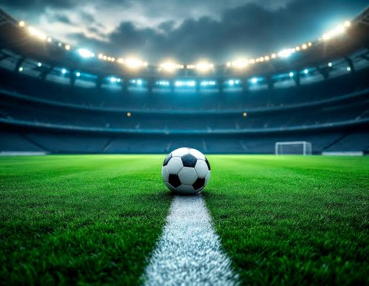

What is Fooball

Football, universally known as association football or soccer, is a highly structured, globally celebrated team sport played between two competing sides on a rectangular grass or turf pitch. The core objective of the game is elegantly simple: players must work cohesively as a unit to maneuver a spherical ball down the field and drive it into the opponent’s rectangular goal frame. Aside from a single designated goalkeeper on each team, players are strictly prohibited from using their hands or arms during active gameplay. Instead, they must rely on exceptional footwork, tactical spatial awareness, and precision passing using their feet, head, and torso to outmaneuver the defense and register points on the scoreboard.Structurally, a standard professional football match spans a continuous 90-minute timeframe, which is split evenly into two 45-minute halves separated by a 15-minute intermission known as halftime. Each team takes the field with exactly 11 active players on the pitch, carefully balancing defensive, midfield, and attacking formations designed to control the flow of the game. The entire match is governed by an on-pitch referee and two running touchline assistants who enforce a rigorous rulebook, including disciplinary fouls and the highly tactical offside rule. In competitive tournament knockout rounds where a definitive winner must be declared, a tied score at the end of regulation triggers 30 minutes of extra time, followed by a dramatic, high-pressure penalty shootout if the deadlock remains unbroken.Beyond its mechanical rules, football is widely considered the world's most popular sport, carrying an unmatched global cultural footprint that unites billions of fans across continents. Often affectionately referred to as "the beautiful game," its simplicity makes it accessible to anyone with a ball and an open space, cementing its status as a staple of community bonding and athletic pride. At its absolute peak, the sport manifests in elite club leagues like the English Premier League and massive international spectacles like the FIFA World Cup, which commands the undivided attention of nearly half the global population. Football transcends mere physical exercise; it operates as a shared universal language, driving massive economic markets, inspiring intense civic rivalries, and fostering generational traditions worldwide.